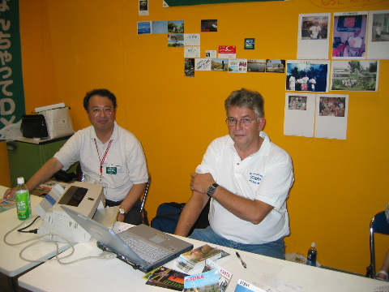
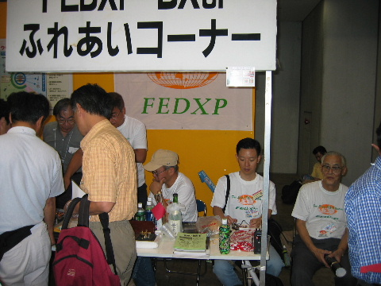
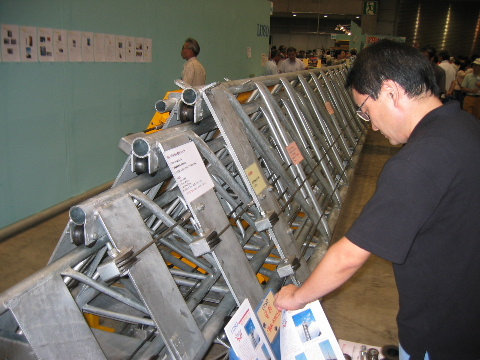
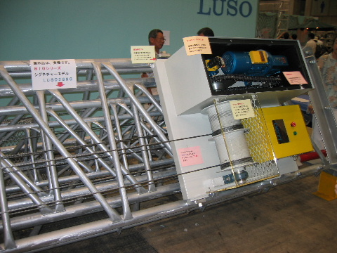
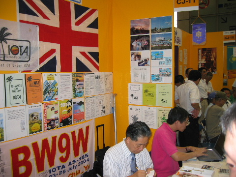
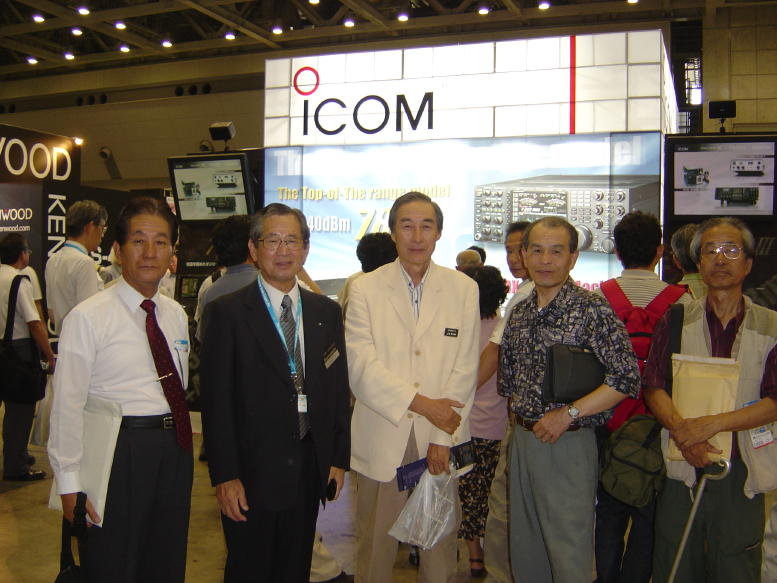
恒例の「Japan DX Meeting」のDXセミナーは、8月21日(土)午後3時30分から多くの海外からのゲストを迎え、
東京ビックサイト会議室で開催された。
15:30 第1部"開会の挨拶" JJ1LIB・野村 豊
15:35 "OPLのウルトラ講座・DXは楽しいぞ" JK1OPL・小野彰彦
15:55 "ST0RY DXペディション & FK/Cに向けて" DL5NAM・Chris Sauvageot
16:05 "スペシャルイベント" JF1IST・藤原 仁
16:20 "参加者のショートスピーチ"
16:30 "Basic DXCC historical facts" NC1L・Bill Moore
17:00 第1部"閉会の挨拶" JP1IOF・小林俊夫
○ DXからの参加者：DL5NAM.DU1HBC.HL1IWD.KH6JA.NC1L.RA3AUU.RW3AH.RZ3AA.TA2IJ
UA3AB
|
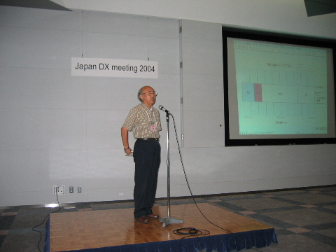
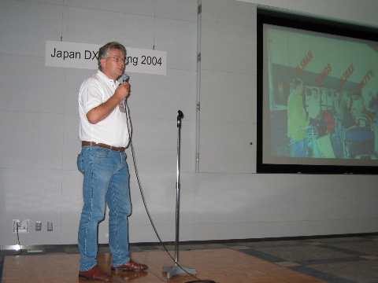
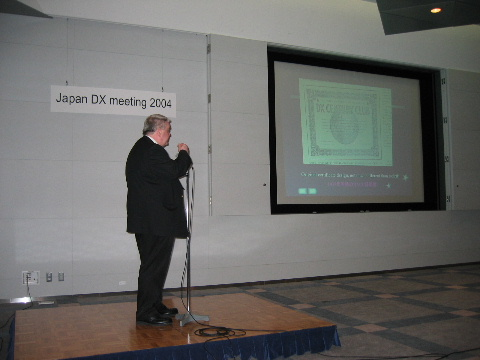
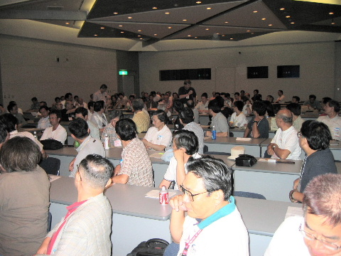
| ハムフェアの日程の短縮で、各種ミーティングは土曜日に集中するため、各ミーティングでは参加者の"確保"に苦労していたが、 今年はJARL主催の「アイボールQSOパーティー」と「JAPAN DX Meeting」が合同開催する事になり、 JARLの懇親会の会場は久しぶりの賑わいとなった。 |
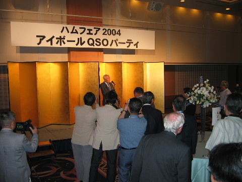
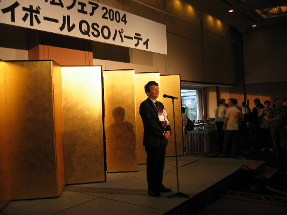
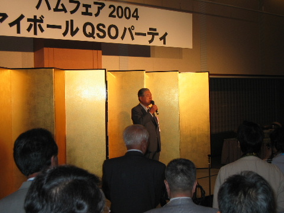
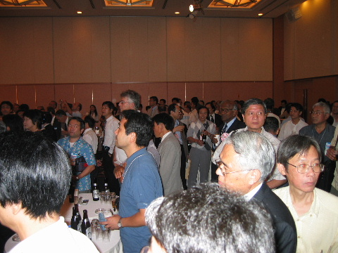
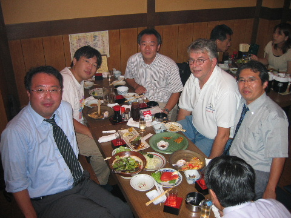
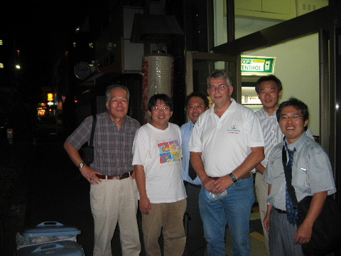
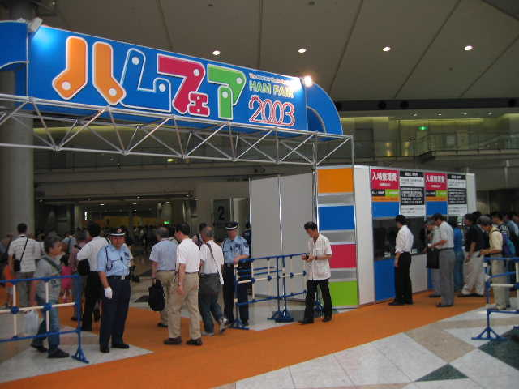 |
Flash Newsへ |